Thu hút khách hàng vào WhatsApp
WhatsApp có chính sách chọn tham gia nghiêm ngặt để ngăn các công ty gửi thư rác cho người dùng. Do đó, không phải lúc nào bạn cũng có thể bắt đầu trò chuyện với khách hàng của mình qua WhatsApp. Khuyến khích người tiêu dùng của bạn bắt đầu cuộc trò chuyện để tương tác với họ trên WhatsApp dễ dàng hơn. Hướng dẫn này sẽ chỉ bạn cách sử dụng Trình tạo liên kết WhatsApp và quảng cáo Nhấp vào WhatsApp để thuyết phục khách hàng của bạn bắt đầu tương tác qua WhatsApp.
Sơ lược về WhatsApp Business
Có thể bạn đã biết, WhatsApp cung cấp hai loại tài khoản doanh nghiệp: Ứng dụng WhatsApp Business và API WhatsApp Business. Cái trước dành cho các công ty nhỏ, trong khi cái sau dành cho các tập đoàn lớn hơn.
Một trong những điểm khác biệt quan trọng nhất giữa Ứng dụng doanh nghiệp và API doanh nghiệp là giới hạn tin nhắn. Vì Ứng dụng WhatsApp Business không có giới hạn nhắn tin nên bạn có thể gửi tin nhắn chủ động lần đầu cho khách hàng miễn là bạn có số điện thoại của họ.
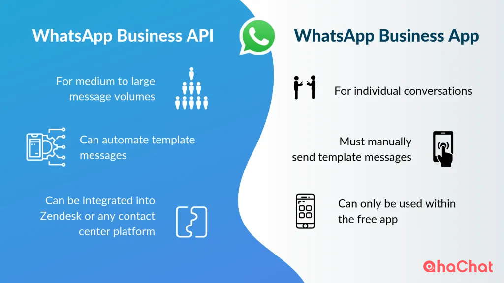
So sánh API WhatsApp Business và ứng dụng WhatsApp Business
WhatsApp có chính sách nhắn tin nghiêm ngặt hơn cho các tài khoản API Doanh nghiệp để tránh thư rác. Các doanh nghiệp sẽ cần nhận được sự đồng ý từ khách hàng trước khi bắt đầu đối thoại bằng tin nhắn.
Trong bài viết này, chúng ta sẽ thảo luận về các phương pháp tốt nhất để khiến khách hàng chủ động nhắn tin cho bạn qua WhatsApp. Cho dù tài khoản WhatsApp Business của bạn có cho phép bạn gửi tin nhắn trước tiên hay không, những chiến thuật này sẽ giúp bạn thu hút các liên hệ WhatsApp mới.
Cách thuyết phục khách hàng của bạn gửi tin nhắn WhatsApp đầu tiên
Có ba kỹ thuật để thu hút khách hàng nhắn tin cho công ty của bạn trước. Bạn có thể tạo Liên kết nhấp để trò chuyện WhatsApp, tạo mã QR Code hoặc chạy quảng cáo Nhấp để mở WhatsApp.
1. Sử dụng Trình tạo liên kết WhatsApp để tạo liên kết WhatsApp.
Liên kết WhatsApp (URL WhatsApp) cho phép bạn bắt đầu thảo luận với ai đó ngay cả khi số điện thoại của họ không có trong danh bạ điện thoại của bạn. Liên kết WhatsApp luôn bắt đầu bằng wa.me/ và kết thúc bằng số WhatsApp của bạn.
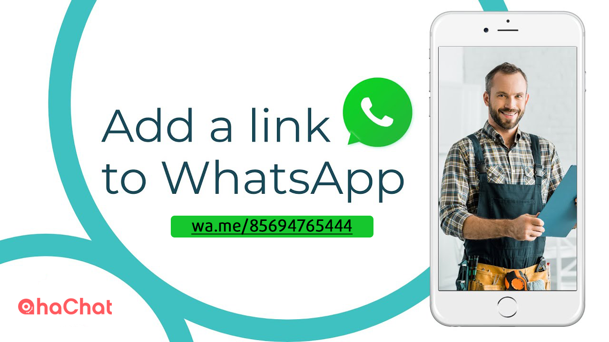
WhatsApp là gì? Trò chuyện ngay: Liên kết WhatsApp
Liên kết WhatsApp là phương pháp đơn giản nhất để khiến khách hàng của bạn gửi tin nhắn đầu tiên. Tất cả những gì khách hàng của bạn phải làm là nhấp vào đó và họ sẽ được chuyển hướng đến cuộc trò chuyện WhatsApp được điền sẵn, nơi họ có thể nhanh chóng nhắn tin cho công ty của bạn.
Bạn có thể sử dụng Liên kết WhatsApp cho doanh nghiệp của mình theo hai cách. Bạn có thể thêm nút WhatsApp vào trang web bằng WhatsApp Link. Ngoài ra, bạn có thể tạo mã QR cho WhatsApp Link và đặt nó trong cửa hàng của mình.
Liên kết WhatsApp : Thêm nút WhatsApp vào trang web hoặc email của bạn
Nút WhatsApp là biểu trưng hoặc văn bản WhatsApp có thể nhấp được tích hợp Liên kết WhatsApp trong đó. Đó là một cách tiếp cận tuyệt vời để khuyến khích khách truy cập internet bắt đầu đối thoại, đặc biệt đối với các công ty có số lượng lớn khách truy cập trang web hoặc người đăng ký email.
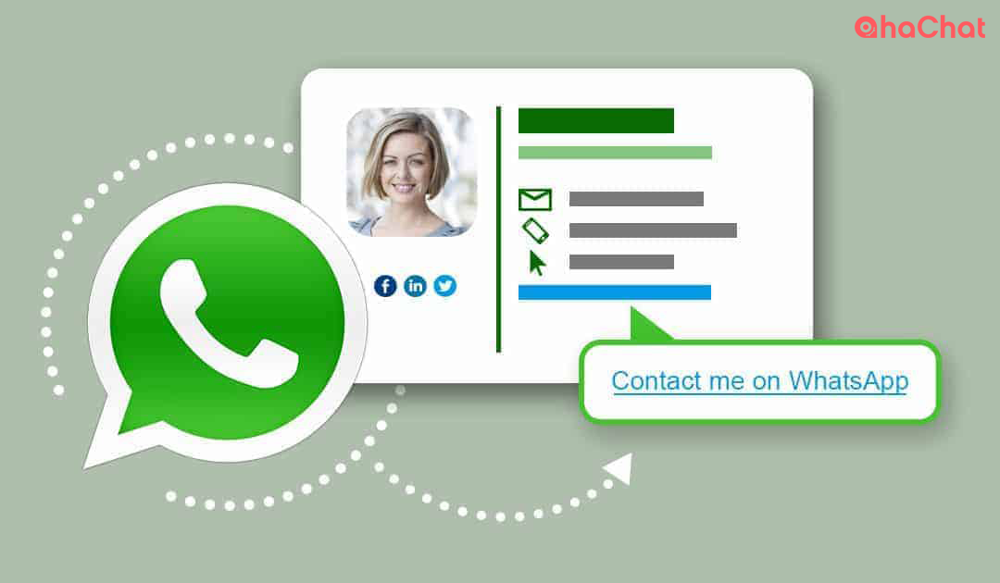
WhatsApp: Thêm nút bấm chứa liên kết
Bạn có muốn biết cách tạo liên kết WhatsApp không? Ứng dụng WhatsApp Business có Trình tạo liên kết WhatsApp, vì vậy bạn có thể lấy URL WhatsApp của mình trực tiếp từ ứng dụng. Chỉ cần đi tới Cài đặt > Công cụ kinh doanh > Liên kết ngắn để bắt đầu.
Để tạo Liên kết WhatsApp khi sử dụng API WhatsApp Business, bạn sẽ cần Trình tạo liên kết WhatsApp của bên thứ ba.
Kết nối tài khoản doanh nghiệp WhatsApp của bạn với AhaChat, sau đó sử dụng trình tạo WhatsApp Ref Url để tạo liên kết kết nối.
Để bắt đầu, hãy chuyển đến Tăng trưởng > Tạo tăng trưởng mới và chọn Whatsapp Ref Url. Nhập tên cho liên kết và nhấp vào Thêm. Rất Đơn giản!
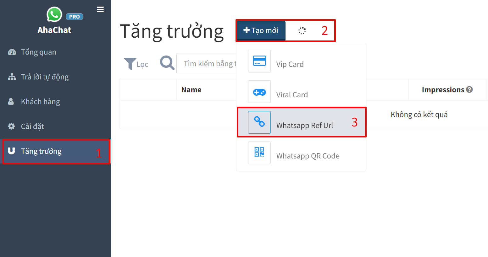
WhatsApp rất tuyệt vời để chuyển đổi khách truy cập trang web thành danh bạ WhatsApp. Whatsapp Ref Url rất tuyệt vời để chuyển đổi khách truy cập trang web thành danh bạ WhatsApp. Tuy nhiên, nó không thể buộc khách truy cập ngoại tuyến nhắn tin cho bạn. Để làm như vậy, bạn sẽ cần có mã QR WhatsApp.
2. Tạo mã QR WhatsApp
Mã QR WhatsApp hỗ trợ chuyển đổi lưu lượng truy cập ngoại tuyến, chẳng hạn như lưu lượng ghé qua cửa hàng thực, sang danh bạ WhatsApp. Khách hàng có thể bắt đầu thảo luận WhatsApp bằng cách quét mã QR, không cần nhập.
Mã QR WhatsApp có thể được đặt ở mọi nơi trong cuộc sống. Chúng tôi ủng hộ việc in mã QR trên các bề mặt hữu hình như bao bì sản phẩm, biểu ngữ, tờ rơi và biên lai.
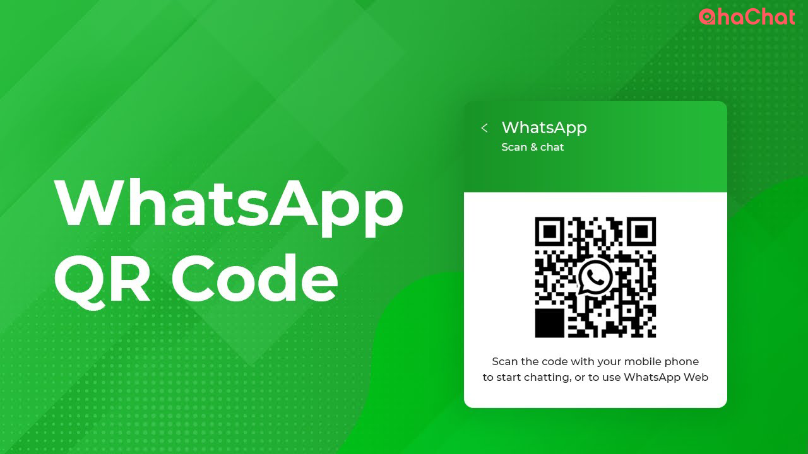
Mã QR WhatsApp
Quy trình tạo mã QR WhatsApp khác nhau tùy thuộc vào loại tài khoản doanh nghiệp bạn có. Người dùng Ứng dụng WhatsApp có thể tìm mã QR của tài khoản của họ bằng cách điều hướng đến Công cụ kinh doanh > Mã QR.
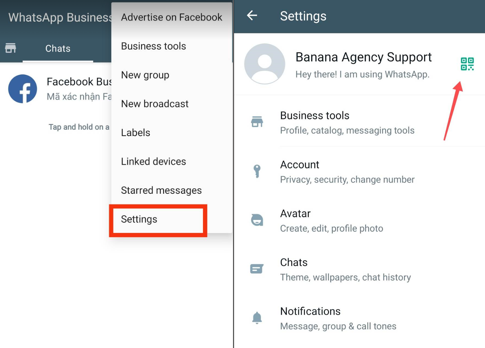
Nếu là người dùng API WhatsApp, bạn có thể tạo mã QR WhatsApp bằng Trình tạo mã AhaChat. Truy cập bot của bạn trên ahachat.com > Menu Tăng trưởng > Nhấp vào Tạo mới → chọn Whatsapp QR Code rồi tải mã QR về thiết bị của bạn.
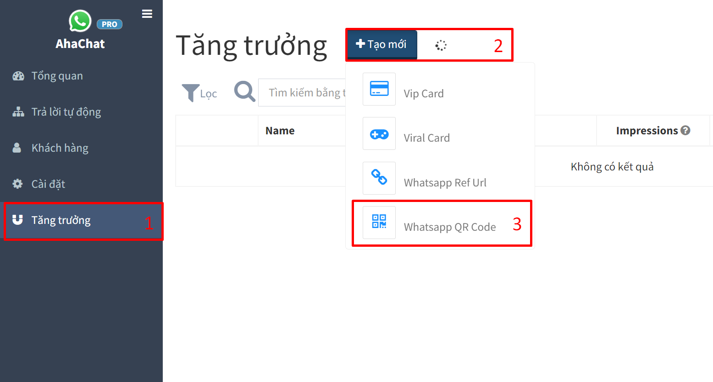
Bây giờ bạn đã tìm hiểu về Liên kết WhatsApp, hãy chuyển sang phương pháp tiếp theo để khiến khách hàng nhắn tin cho bạn - Quảng cáo nhấp vào WhatsApp.
3 . Chạy Quảng cáo nhấp vào WhatsApp
Quảng cáo trên Facebook có nút kêu gọi hành động Gửi WhatsApp được gọi là Quảng cáo nhấp vào WhatsApp. Quảng cáo Nhấp vào WhatsApp hoạt động tương tự như Quảng cáo Nhấp để Messenger, ngoại trừ việc nhấp vào chúng sẽ mở ra cuộc trò chuyện WhatsApp thay vì trò chuyện Messenger.
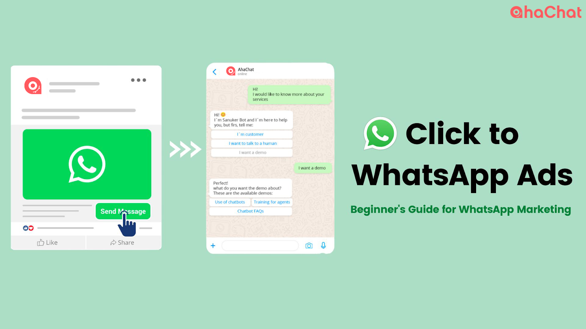
Nhấp vào Quảng cáo WhatsApp
Một điểm khác biệt giữa quảng cáo Nhấp để WhatsApp và Nhấp để vào Messenger là khả năng theo dõi của chúng. Trái ngược với Quảng cáo Nhấp để Messenger, bao gồm các tính năng theo dõi nâng cao, Quảng cáo Nhấp để WhatsApp không cho phép bạn theo dõi số lượng khách hàng đã nhấp vào quảng cáo.
Quảng cáo Nhấp vào WhatsApp có thể được tạo theo hai cách: bằng cách quảng cáo bài đăng trên Facebook hoặc trực tiếp từ Trình quản lý Quảng cáo. Vì Trình quản lý Quảng cáo cung cấp nhiều tùy chọn tùy chỉnh hơn nên chúng tôi khuyên bạn nên tạo Quảng cáo Nhấp vào WhatsApp từ đó.
Tạo Quảng cáo nhấp vào WhatsApp trong Ad Manager.
Cần có tài khoản Ứng dụng WhatsApp Business hoặc API WhatsApp Business để chạy Quảng cáo nhấp vào WhatsApp. Trước khi bạn có thể tạo Quảng cáo Nhấp vào WhatsApp, trước tiên bạn phải:
- Kết nối trang Facebook của bạn với tài khoản WhatsApp của bạn.
- Đặt tài khoản chạy quảng cáo Facebook của bạn làm quản trị viên của Trang.
1. Trong Trình quản lý quảng cáo, hãy tạo một chiến dịch có mục tiêu Tin nhắn.
Khi chọn mục tiêu này, lời kêu gọi hành động của bạn sẽ trở thành Gửi tới WhatsApp.
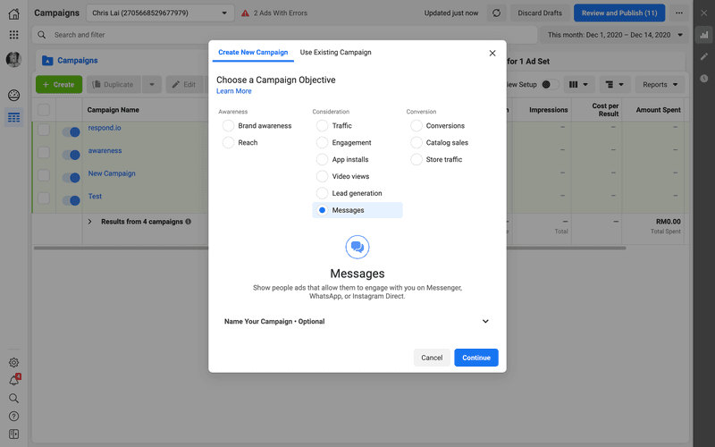
Chọn Tin nhắn làm Mục tiêu Chiến dịch của Bạn
2. Chỉnh sửa tên chiến dịch và chi tiết chiến dịch.
Khi thích hợp, hãy khai báo quảng cáo của bạn là Quảng cáo đặc biệt và thiết lập thử nghiệm A/B để hiểu chiến lược quảng cáo nào mang lại cho bạn kết quả tốt nhất.
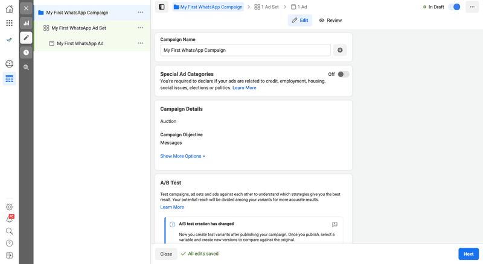Chỉnh sửa Tên & Chi tiết Chiến dịch
3. Chọn WhatsApp Business làm Đích tin nhắn.
Nếu bạn đang quản lý nhiều Trang Facebook, hãy chọn Trang mà bạn muốn tạo quảng cáo. Đảm bảo rằng nó được kết nối với tài khoản WhatsApp Business.
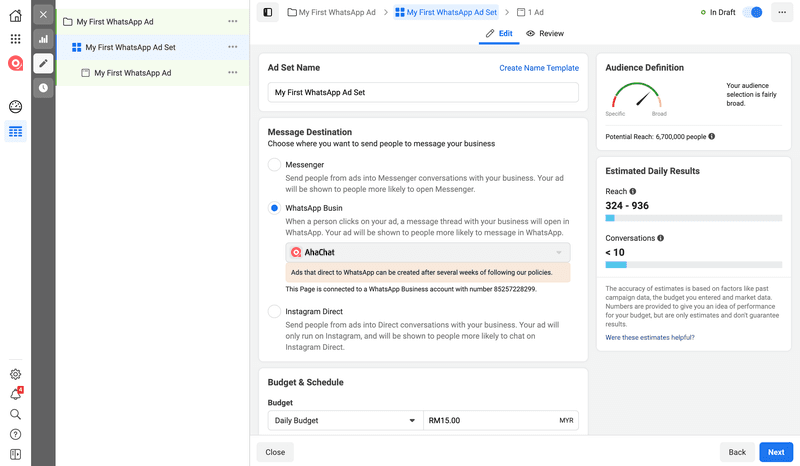Chọn WhatsApp Business làm đích tin nhắn
4. Chỉnh sửa Ngân sách, Lịch trình, Đối tượng, Vị trí, Tối ưu hóa và Phân phối trên cùng một trang. Sau đó, nhấp vào Next.
5. Chọn định dạng quảng cáo của bạn trong Thiết lập quảng cáo. Sau đó soạn quảng cáo của bạn dưới Ad Creative.
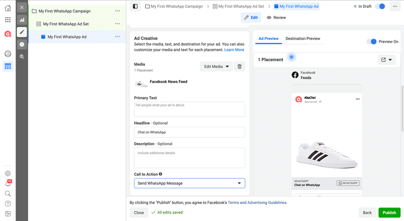Soạn một Nhấp chuột vào Quảng cáo WhatsApp
6. Tạo Mẫu.
Viết lời chào và câu hỏi thường gặp. Nhấp vào Lưu và Kết thúc khi bạn hoàn tất.
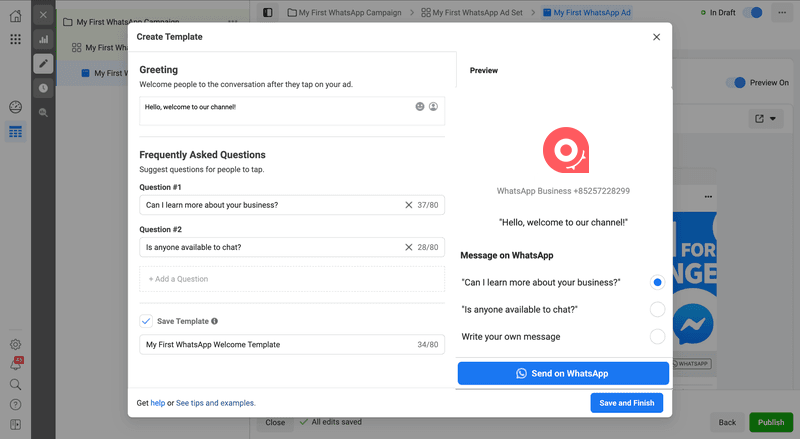Tạo tin nhắn chào mừng và câu hỏi thường gặp cho quảng cáo của bạn
7. Cuối cùng, nhấp vào Xuất bản để khởi chạy quảng cáo Nhấp vào WhatsApp.
Đó là các bước bạn cần để thực hiện tạo Quảng cáo Nhấp vào WhatsApp.